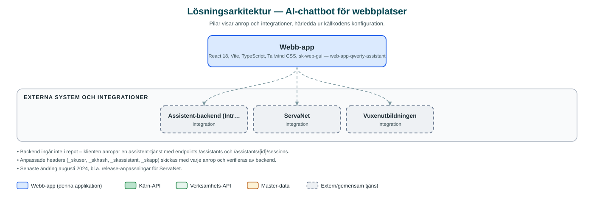

AI-chattbot för webbplatser
En inbäddningsbar AI-chattbot som lägger sig i webbsidans nedre högra hörn och svarar på besökarnas frågor, med färdiga varianter för bland annat vuxenutbildningen och ServaNet.
Om applikationen
Detta är en chattbot-klient som kan bäddas in på valfri webbplats och placerar sig i nedre högra hörnet på klassiskt chattbotmanér. Besökaren kan ställa frågor i fritext och få svar från en AI-assistent, med förslag på vanliga frågor som ingång.
Applikationen byggs i olika lägen för olika verksamheter. I koden finns färdiga varianter för vuxenutbildningen (frågor om ansökan, studievägledning och SFI) och för stadsnätsbolaget ServaNet (felsökning av bredbandsuppkoppling), med anpassad grafisk profil för respektive avsändare.
Chattboten körs som webbkomponent i shadow DOM så att den inte krockar med den omgivande webbplatsens utseende, och kommunicerar med en central assistent-backend som i sin tur bygger på kommunens AI-plattform.
Det här stödjer applikationen
- Chatt med AI-assistent – Besökaren ställer frågor i fritext och får svar direkt i chattfönstret.
- Föreslagna frågor – Vanliga frågor visas som klickbara förslag, t.ex. hur man ansöker till en kurs eller felsöker sitt internet.
- Verksamhetsanpassade profiler – Färg, logotyp och texter anpassas per verksamhet (vuxenutbildningen, ServaNet med flera).
- Enkel inbäddning – Läggs in på en webbsida med några rader kod och körs isolerat som webbkomponent.
- Återkoppling på svar – Besökaren kan lämna feedback på assistentens svar i en session.
Teknisk dokumentation
Nedan beskrivs hur applikationen är uppbyggd, vilka API:er den använder och vad som krävs för att driftsätta den. Informationen är härledd ur källkoden och dess konfiguration på GitHub.
Arkitektur

Applikationen är en webbaserad frontend (React 18, Vite, TypeScript, Tailwind CSS, sk-web-gui). Övriga integrationer som förekommer i koden: Assistent-backend (Intric-baserad AI-plattform), ServaNet, Vuxenutbildningen.
Teknikstack
- Frontend: React 18, Vite, TypeScript, Tailwind CSS, sk-web-gui
API-beroenden
Inga prenumerationer på kommunens API-plattform hittades i källkodens konfiguration.
Konfiguration och driftsättning
- Miljöfil per verksamhet (.env.<NAMN>.local) med VITE_API_BASE_URL, assistent-id, namn och texter
- index.html skapas från mall med data-user, data-hash och data-assistant
- Byggs per läge med yarn build --mode=<NAMN>
Noterbart ur källkoden
- Backend ingår inte i repot – klienten anropar en assistent-tjänst med endpoints /assistants och /assistants/{id}/sessions.
- Anpassade headers (_skuser, _skhash, _skassistant, _skapp) skickas med varje anrop och verifieras av backend.
- Senaste ändring augusti 2024, bl.a. release-anpassningar för ServaNet.
Källkod
Källkoden är öppen och finns hos Sundsvalls kommun på GitHub. I källkodsförrådet finns även instruktioner för att klona, konfigurera och starta applikationen i egen miljö.